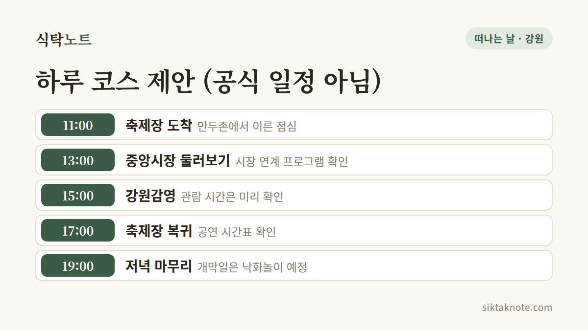

원주 만두축제 2026 가이드 — 기간, 장소, 프로그램, 셔틀, 하루 코스

3줄 요약
- 2026년 10월 23일(금)부터 25일(일)까지 사흘간 열려요. 공식 사이트에는 "중앙동 전통시장 일원"으로, 시 계획 보도에는 원주천과 문화의거리까지 넓어진다고 나와요.
- 만두존 15개 업체, QR 주문과 키오스크, 정지선 셰프 쿠킹쇼, 개막일 원주천 낙화놀이가 예정돼 있어요.
- 일자별 시간표와 입장료, 가격은 공식 사이트에 아직 없어서 확인하지 못했어요.
행사 정보
- 기간
- 2026년 10월 23일(금) ~ 25일(일), 3일간
- 장소
- 중앙동 전통시장 일원 (공식 사이트). 원주천 새벽시장과 문화의거리까지 확대 (원주시 계획, 언론 보도)
- 슬로건
- 시장에서 한 판, 즐거울 만두! (공식 사이트)
- 입장·가격
- 공식 사이트에 아직 안내가 없어요
- 운영 시간
- 올해 시간은 확인하지 못했어요 (지난해는 11시~21시라는 보도)
- 주차·셔틀
- 주차 약 1,980대, 셔틀 3개 노선 (원주시 계획, 언론 보도)
- 문의
- 033-760-9863 (원주문화재단, 평일 9시~18시, 점심 12시~13시)
2026.10.05 확인 기준. 공식 프로그램·교통안내 페이지에는 아직 상세 내용이 없어요. 운영 주체가 소셜미디어(@wonjumandufestival)로 알리는 공지를 확인하세요.

시장에서 한 판, 즐거울 만두
2026 원주만두축제는 10월 23일(금)부터 25일(일)까지 사흘간 열려요. 슬로건은 "시장에서 한 판, 즐거울 만두!"예요. 공식 사이트에는 장소가 "중앙동 전통시장 일원"으로 적혀 있어요. 원주시 계획을 전한 보도에서는 올해 메인 무대와 먹거리 공간을 원주천에 만들고, 전통시장과 문화의거리에서도 프로그램을 연다고 해요.
회차는 공식 사이트에 나와 있지 않아요. 2023년 10월에 처음 열렸고 지난해가 제3회로 보도되었으니, 올해는 네 번째인 셈이에요.

만두 값과 주문 방법
올해 판매 가격은 공식 사이트에 아직 없어요. 2024년에는 바가지요금을 막으려고 판매가를 5,000원 이하로 제한했다는 보도가 있었지만, 올해도 같은지는 확인하지 못했어요.
먹거리는 '원주만두존'에서 팔아요. 보도에 따르면 9월 8일 사전 품평회에 32개 팀이 나와 15개 업체가 뽑혔어요. 지난해 혼잡을 줄이려고 QR 실시간 주문·예약과 키오스크를 도입한다고 해요. 쓰는 방법은 공식 안내를 찾지 못했어요.

어떤 프로그램이 있나요
공식 프로그램 페이지에는 10월 5일 현재 "프로그램 열심히 준비 중..."이라고만 적혀 있어요. 그래서 일자별 시간표는 쓰지 못하고, 시 계획과 보도로 알려진 것만 옮겨요. 바뀔 수 있어요.
- 개막일 원주천 낙화놀이
- 정지선 셰프의 라이브 쿠킹쇼 (8월 25일 홍보대사로 위촉, 날짜와 시간은 미확인)
- 만두 빨리 빚기 경연대회와 만두 빚기 체험
- 시민 프린지 공연, 지역 예술단체 공연, 플리마켓
- 전통시장 만두로드, 스탬프투어
하루 코스, 이렇게 짜 봤어요
카드는 제안일 뿐 공식 일정이 아니에요. 축제장에서 각 장소까지의 이동 시간은 공식 자료로 확인하지 못했으니 지도 앱으로 재 보세요.
강원감영은 원일로 77에 있어요. 원주시 안내로는 원주8경 가운데 제2경이고, 조선시대 강원도 관찰사의 관청으로 1395년부터 1895년까지 이어졌어요. 원주시외버스터미널에서 51번 버스를 타고 강원감영 정류장에서 내리면 걸어서 2분이라고 해요. 관람 시간은 자료마다 달라서 확인하지 못했어요.
소금산 그랜드밸리는 따로 하루를 잡는 편이 나을 수 있어요. 원주시 안내에 따르면 매주 월요일은 쉬어요. 대인 요금은 트레킹 코스 10,000원, 케이블카 코스 18,000원이에요(2025년 2월 26일 적용). 10월 31일까지 토요일과 공휴일 밤에 열리는 나오라쇼는 보도 기준 19시 50분부터 70분 동안이에요.
원주는 왜 만두일까
원주시는 2023년 10월에 만두를 시의 대표 음식으로 선정했다고 보도되었어요. 같은 보도에 따르면 한국전쟁 뒤 미군이 나눠 준 밀가루로 피란민과 상인이 원주역 앞에서 만두를 빚어 판 것이 시작이고, 시는 칼만두와 꿩만두가 원주에서 비롯되었다고 봐요.
강원특별자치도 대변인실이 펴내는 「동트는강원」에는 원주자유시장 회장의 설명이 실려 있어요. 전쟁 뒤 배고픔을 달래려고 시장 주변에서 배춧잎을 주워 만든 것이 지금의 김치만두라는 이야기예요. 중앙·자유·도래미 세 전통시장에는 3대째 이어 온 만두 가게도 있다고 해요.
한국민족문화대백과사전은 만두를 밀가루나 메밀가루 반죽에 소를 넣어 만드는 음식으로 설명하고, 메밀과 밀이 흔했던 평양·함경도 같은 북쪽 지방에서 발달했다고 해요. 강원도 향토 음식으로서의 서술은 백과사전에서 찾지 못했어요.
셔틀과 주차
원주시 계획으로는 축제장 인근에 약 1,980대 규모의 주차 공간을 마련하고, 시청·원주역·댄싱공연장과 축제장을 잇는 셔틀버스 3개 노선을 운영해요. 노선과 운행 시간, 주차장 위치는 공식 교통안내 페이지에 아직 올라오지 않았어요.
지난해에는 문화의거리와 원일로 일대에 교통 통제가 있었고, 시내버스 우회 안내문도 따로 올라왔어요. 올해 통제 구간은 확인하지 못했으니 공지를 기다려 주세요.
아이, 어르신과 갈 때
지난해에는 가족 단위 방문객이 많았다고 보도되었어요. 올해도 만두를 직접 빚는 체험이 소개되어 있어서 아이와 함께하기 좋아 보여요. 다만 유모차나 휠체어 이동, 쉴 곳, QR 주문을 돕는 현장 안내는 공식 자료로 확인하지 못했어요.
스마트폰 주문이 낯선 어르신이 계신다면 키오스크가 있다는 점과 문의 전화(033-760-9863)를 알아 두세요.
자주 묻는 질문, 그리고 출발 전에
입장료가 있나요? 공식 사이트에서 찾지 못했어요. 가기 전에 공지를 확인해 주세요.
몇 시부터 열어요? 올해 운영 시간은 확인하지 못했어요. 지난해는 오전 11시부터 오후 9시까지였다는 보도가 있었어요.
공연과 출연진은요? 공식 사이트에 아직 없어요. 올라오는 대로 이 글을 고쳐 쓸게요.
같은 주말 강릉에서는 커피축제가 열려요. 하루씩 나눠 다니는 분은 10월 강원도 축제 일정을 함께 보세요. 만두를 넉넉히 사 오셨다면 낱개로 얼리는 법이 도움이 될 거예요.
이 글은 2026년 10월 5일 기준이에요.